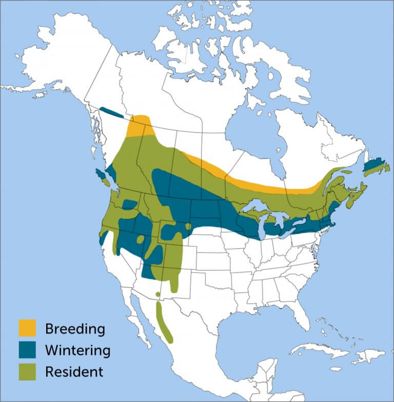

install.packages(c("motus", "motusData"),
repos = c(birdscanada = 'https://birdscanada.r-universe.dev',
CRAN = 'https://cloud.r-project.org'))
# Load the packages for use
library(motus)
library(motusData)Using Interactive Graphics to Visualize Evening Grosbeak Movement and Migration Patterns
Abstract
This project aims to analyze a large dataset on Evening Grosbeaks, a species within the finch family native to North America. The data comes from Motus, a network of radio receivers that are able to pick up transmissions from tagged birds. Motus has many large datasets of all types of bird species and through data cleaning in R, this project hones in on the data captured for Evening Grosbeaks. The main objective for this project was to develop a platform enabling users to observe and understand trends in their migration patterns. The R shiny app created for this showcases many features: an interactive map of deployment sites, individual bird tracking, group bird tracking (by winter roosting location and deployment location), all Evening Grosbeak data used, and all Evening Grosbeak data used from the Adirondack region. The app is available at: https://stlawu.shinyapps.io/evening_grosbeak_tracker/
Introduction
Evening Grosbeaks are an endangered species with a rapidly declining population. It is important to visualize their migration and movement patterns to then be able to analyze what is leading to their extinction.
The purpose of this project was to explore what tools from R Shiny can be used to for bird data visualizations and make raw data into an interactive, more accessible experience. The app provides users with a platform to interact with data, deployment sites, winter locations, individual trends, and group trends for the Evening Grosbeak.
Background
( - Why are we looking at winter spots? What needs to be analyzed? - What are the possibilities of Shiny? Write about R sources )
R
R is an extremely popular language in the world of biodiversity conservation research for visualization and analyses. R is a cohesive set of software features and tools. It is also an open-source programming language. This means that it is free for use and collaboration. Anybody is able to create and add functions through writing packages to build upon existing operators and facilities for data, statistical analyses, visualizations, etc,. Work and research done in R is very often easily reproducible because R facilitates a space for creators to document their work cleanly and has a very readable structure. R files can be rendered in many ways (Word files, pdfs, webpages, etc.) to be shared and replicated.
Motus in R
Motus is a wildlife tracking system from Birds Canada. It is composed of a network of researchers around the world who are able to contribute to the radio telemetry system. By contributing (tagging birds and setting up radio receiver locations), more researchers are then able to access the growing database of bird tracking information. While one researcher could hypothetically set up their own, small telemetry network to track a local bird, Motus creates the opportunity to connect all of these local sites and broaden data and information exponentially. Collaboration for scientists and bird-watchers across the world has been made easy by Motus.
For this application, access to a “project” was given by St. Lawrence biology professor, Dr. Susan Willson, who has a focus and interest in conservation of birds, namely the Evening Grosbeak. A “project” in Motus is an access point to the database with managed data access levels and users.
One benefit of using Motus is its standardized data format across all projects. In addition to this, because of the large network of researchers, many analyses have been well documented and created already for Motus data usage. And so, the visualizations made and the data manipulation tools needed for this project were kick started by existing work with Motus in R.
Winter Spots and Breeding
For the Evening Grosbeak, it is important to look into their seasonal whereabouts. This may be a large aide in determining what is the cause of the rapidly declining population. This species is a very social species, who typically travel and roost in groups, especially in the winter.

Figure 1. Evening Grosbeak range map by American Bird Conservatory
In the winter, the Evening Grosbeak searches for food. The bird’s type of migration is called a “winter finch irruption,” that is taken by many seed-eating birds. During these “irruptions,” these birds move south of their typical breeding grounds in to find sources of winter food.
Methods
- Include code
- describe data wrangling and data cleaning (dplyr etc.)
- interpretations of the data - describe leaflet
Motus R Package
Birds Canada, the creator of the radio telemetry network of Motus, has detailed documentation for an R package to use the Motus data. The website for this package gives extensive instruction on how to get started using the Motus database in R, how to access data, how to make sense of tag and receiver deployments, how to clean the data, and examples of how to explore the data.
The following is the provided code to install the package.
R Shiny
Shiny is an R package (extension to R, standardized tools with documentation that can be installed to your machine). Once installed, this package creates the opportunity for application construction. The code for these apps have three components, the UI (user-interface object), the server function, and a final call to the shinyApp function. The UI draws up the appearance of the app; what the user is seeing. The server function is responsible for the code that performs the outputs and their functionalities. And the final call to the shinyApp function will launch the app when the code is ran.
There are many benefits to using Shiny to showcase data analyses and visualizations. To start, the interactive ability of a Shiny app can transform user accessibility to data. With these apps, there are many widgets that the creator can include in the UI (that then speak to the server output) that allows a user to choose what they are seeing from the data: slider inputs (for numerical input), text inputs, checkboxes, dropdown menus, file uploaders, etc. With this user power to choose outputs, Shiny apps can be reactive and responsive, updating the outputs of each page in real-time. Another benefit is ease fo deployment for Shiny apps. Instead of code files or papers showcasing research, Shiny apps can be deployed easily with URLS and showcase findings in a more fluid, interactive, and engaging way.
Shiny App Results
- screenshots of app
- visualizations
- leaflet maps of deployments
- leaflet maps of winter spots
Discussion
- future applications
- bio/data science student to build off of this starter app and analyze what is actually happening
- needs more data cleaning (birds in south america should not be showing up)
- more widgets for timelines (slider input to pick a time period to plot a bird)
Conclusion
- what I have been able to learn and showcase through this project
Acknowledgements
References
https://motus.org/about/ https://www.mdpi.com/1424-2818/15/12/1202
https://www.allaboutbirds.org/guide/Evening_Grosbeak/id
https://motuswts.github.io/motus/index.html